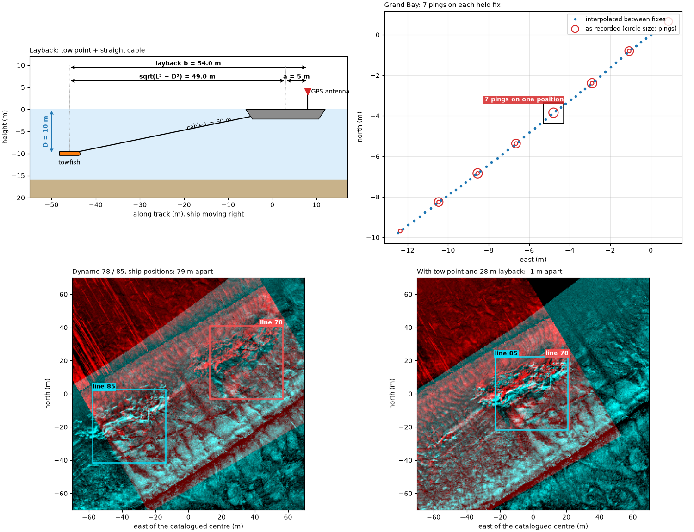
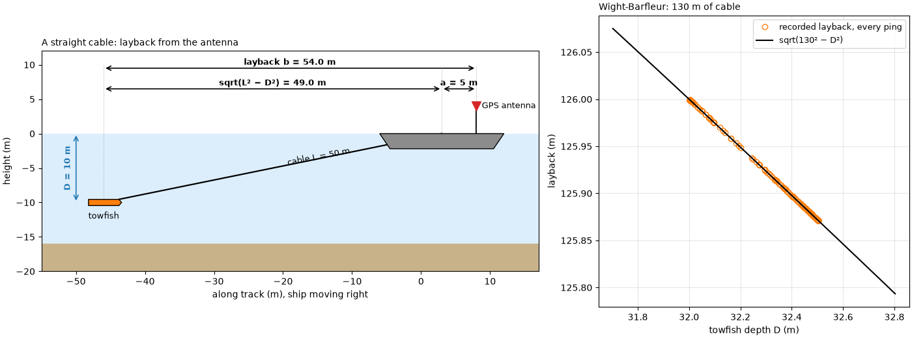
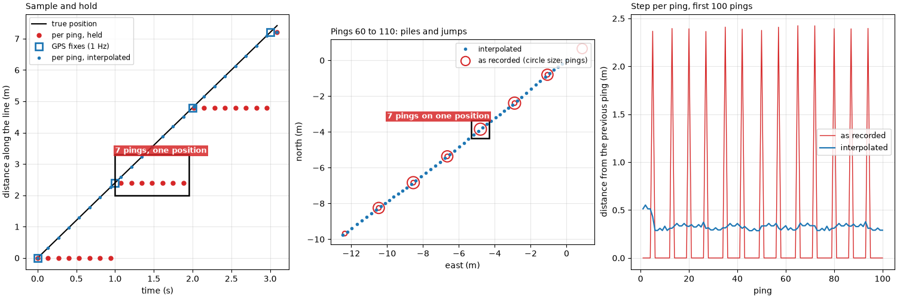
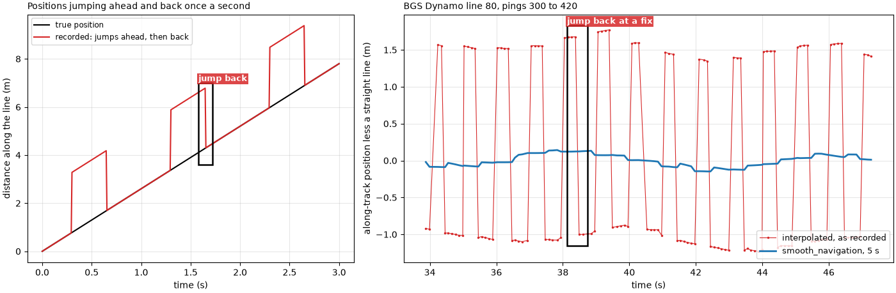
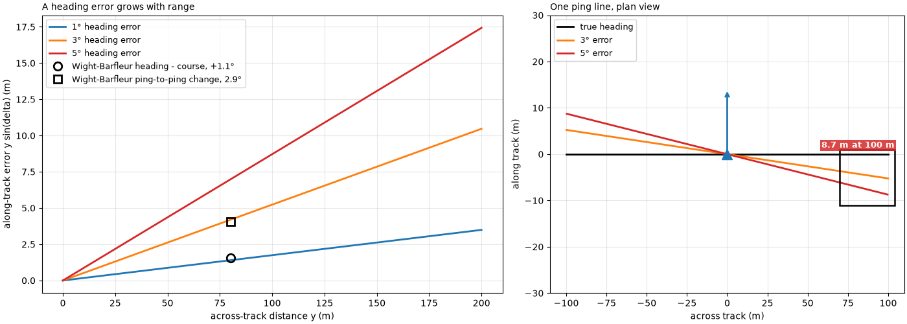
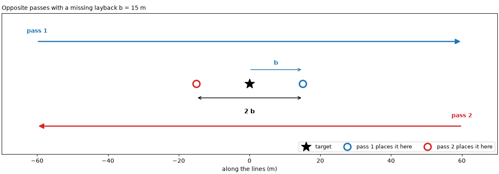
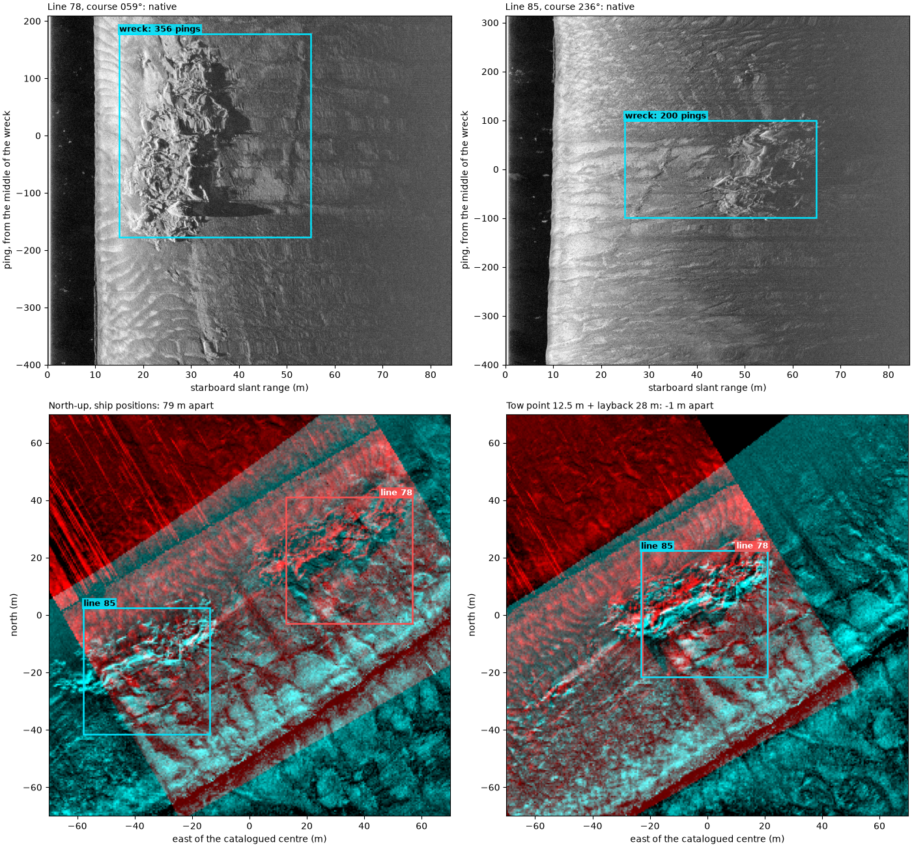

Note
Go to the end to download the full example code.
Where the towfish is: navigation and layback#

Every pixel of a georeferenced sidescan image is placed from three numbers per ping: the towfish’s position, its heading, and the slant range of the sample. An error in the position moves the whole ping; an error in the heading swings it, more at long range. This page covers where the position comes from and four ways it goes wrong.
Layback. The GPS antenna is on the ship; the towfish is behind it.
The fish trails the antenna by the tow-point offset a (antenna to
the point where the cable leaves the ship) plus the horizontal length
of the cable. For a straight cable of length L to a fish at depth
D below the tow point,
Worked: 50 m of cable with the fish 10 m deep gives
sqrt(50² − 10²) = 49.0 m of layback from the tow point. A real cable
sags, so the fish is a little closer than this.
Sample-and-hold. A GPS typically updates about once a second, but the sonar pings several times a second. Recorders copy the latest fix onto every ping until the next one arrives, so several pings share a position and then the track jumps. Placed as recorded, pings pile up on each fix and leave a gap before the next. The fix is to keep only the real fixes and interpolate between them in time.
Running ahead. Some recorders instead carry the position forward between fixes, then jump back when the next fix disagrees: a sawtooth or square wave along track, repeating at the GPS rate. Fitting a smooth line over a few seconds, several periods, removes it.
Heading. The heading turns each ping line around the towfish. An
error delta in it moves a sample at across-track distance y by
y sin delta, so 1° is 1.7 m at 100 m. A towfish’s compass can be
biased by the steel of the fish or missing altogether; the course over
ground, the direction of travel measured from the positions, can stand
in for it. It assumes the fish points where it goes (no crab) and, being
measured over a window of several seconds, it lags in turns.
Checking the layback. Run a line over a known target in both
directions. A missing layback b puts the target b too far ahead
on each pass, so the two passes place it 2 b apart along the line.
Data: JNCC Wight-Barfleur Reef (Open Government Licence v3.0), USGS Grand Bay (U.S. public domain) and BGS London Gateway (Open Government Licence v3.0, contains data supplied by UKRI); see Example data.
Usage: python examples/theory/plot_navigation_and_position.py [output_dir]
# 2026 rshomberg@uri.edu
import sys
from pathlib import Path
import matplotlib.pyplot as plt
import numpy as np
from matplotlib.patches import FancyArrowPatch, Polygon, Rectangle
from pyproj import Transformer
from scipy.ndimage import binary_closing, median_filter, uniform_filter, uniform_filter1d
from sidescanpy import datasets
from sidescanpy.io import read_and_convert
from sidescanpy.log import configure_logging
from sidescanpy.processing import (
altitude_from_bottom_track,
apply_layback,
aux_update_events,
compute_geometric_ranges,
compute_georeferencing,
course_over_ground,
interpolate_aux_onto_pings,
smooth_navigation,
)
out = Path(sys.argv[1]) if len(sys.argv) > 1 else Path(".")
out.mkdir(parents=True, exist_ok=True)
configure_logging("ERROR")
MARK = "#00e5ff" # label colour on the sonar images
BAD, GOOD = "#d62728", "#2ca02c"
C = 1500.0 # m/s; these files record no sound velocity
def mark(ax, x0, x1, y0, y1, text, colour=MARK, inside=False, ha="left", dashed=False, edge=None):
"""Box a feature and label it, above the box or just inside its top."""
ec = edge or (colour if colour == MARK else "k")
ax.add_patch(Rectangle((x0, y0), x1 - x0, y1 - y0, fill=False, ec=ec, lw=1.8, ls="--" if dashed else "-",
zorder=5))
if text:
ax.text(x0 if ha == "left" else x1, y1, text, color="black" if colour == MARK else "white", fontsize=9,
fontweight="bold", ha=ha, va="top" if inside else "bottom", clip_on=True, zorder=6,
bbox=dict(fc=colour, alpha=0.85, ec="none", pad=1.5))
def seconds(ds):
return (ds["time"].values - ds["time"].values[0]) / np.timedelta64(1, "s")
def east_north(ds, epsg):
return Transformer.from_crs(4326, epsg, always_xy=True).transform(ds["longitude"].values, ds["latitude"].values)
Layback: the cable#
Left: the geometry, for the worked example (50 m of cable, fish 10 m
below the tow point, a tow point 5 m behind the antenna). Right: the
Wight-Barfleur JSF file records, for every ping, the cable paid out,
the towfish’s depth and a layback. The layback it records is exactly
the straight-cable value sqrt(L² − D²), and the recorder applied it
itself: the reader finds the positions marked as the towfish’s.
CABLE, DEPTH, TOW_POINT = 50.0, 10.0, 5.0
cable_part = np.sqrt(CABLE ** 2 - DEPTH ** 2)
print(f"worked: sqrt({CABLE:.0f}^2 - {DEPTH:.0f}^2) = {cable_part:.2f} m; with a {TOW_POINT:.0f} m tow-point offset "
f"the layback is {TOW_POINT + cable_part:.2f} m")
wb = read_and_convert([datasets.fetch("jncc_wight_barfleur_20130321174522.jsf")], fmt="jsf")
wb = wb.get_frequency("hz_521000").dataset
wb_cable, wb_depth, wb_layback = (wb[v].values.astype(float) for v in ("cable_out_m", "depth_m", "layback_m"))
wb_straight = np.sqrt(wb_cable ** 2 - wb_depth ** 2)
print(f"Wight-Barfleur: cable {np.median(wb_cable):.0f} m, towfish depth {wb_depth.min():.2f} to {wb_depth.max():.2f} m, "
f"recorded layback {wb_layback.min():.2f} to {wb_layback.max():.2f} m")
print(f" recorded minus sqrt(cable^2 - depth^2): largest difference {np.max(np.abs(wb_layback - wb_straight)):.3f} m; "
f"worked: sqrt(130^2 - {np.median(wb_depth):.2f}^2) = {np.sqrt(130 ** 2 - np.median(wb_depth) ** 2):.2f} m")
print(f" position source: {wb.attrs['position_source']}")
def layback_diagram(ax):
sea = 0.0
ax.axhspan(-16, sea, color="#dceefb", zorder=0)
ax.axhspan(-20, -16, color="#c8b28a", zorder=0)
hull = np.array([[-6, 0.0], [12, 0.0], [10.5, -2.2], [-4.5, -2.2]])
ax.add_patch(Polygon(hull, fc="0.55", ec="k", zorder=3))
antenna = (8.0, 4.0)
ax.plot([antenna[0], antenna[0]], [0, antenna[1]], color="k", lw=1.5)
ax.plot(*antenna, "v", color="C3", ms=10, zorder=4)
ax.text(antenna[0] + 0.8, antenna[1], "GPS antenna", fontsize=9, va="center")
tow = (antenna[0] - TOW_POINT, 0.0)
fish = (tow[0] - cable_part, -DEPTH)
ax.plot([tow[0], fish[0]], [tow[1], fish[1]], color="k", lw=1.6)
ax.add_patch(Polygon(np.array([[-2.2, -0.45], [2.2, -0.45], [2.6, 0], [2.2, 0.45], [-2.2, 0.45]])
+ fish, fc="C1", ec="k", zorder=4))
ax.text(fish[0], fish[1] - 1.3, "towfish", ha="center", va="top", fontsize=9)
ax.text((tow[0] + fish[0]) / 2 + 2, (tow[1] + fish[1]) / 2 + 0.4, f"cable L = {CABLE:.0f} m", rotation=11,
fontsize=9)
for x0, x1, y, text in ((fish[0], tow[0], 6.5, f"sqrt(L² − D²) = {cable_part:.1f} m"),
(tow[0], antenna[0], 6.5, f"a = {TOW_POINT:.0f} m"),
(fish[0], antenna[0], 9.5, f"layback b = {TOW_POINT + cable_part:.1f} m")):
ax.add_patch(FancyArrowPatch((x0, y), (x1, y), arrowstyle="<->", mutation_scale=12, color="k", lw=1.2))
ax.text((x0 + x1) / 2, y + 0.5, text, ha="center", fontsize=9, fontweight="bold")
ax.add_patch(FancyArrowPatch((fish[0] - 4, 0), (fish[0] - 4, fish[1]), arrowstyle="<->", mutation_scale=12,
color="C0", lw=1.2))
ax.text(fish[0] - 4.6, fish[1] / 2, f"D = {DEPTH:.0f} m", rotation=90, ha="right", va="center", color="C0",
fontsize=9, fontweight="bold")
for x in (fish[0], tow[0], antenna[0]):
ax.plot([x, x], [fish[1] if x == fish[0] else 0, 10], color="0.6", lw=0.6, ls=":")
ax.set_xlim(fish[0] - 9, antenna[0] + 9)
ax.set_ylim(-20, 12)
ax.set_aspect("equal")
ax.set_xlabel("along track (m), ship moving right")
ax.set_ylabel("height (m)")
fig, (ax_d, ax_w) = plt.subplots(1, 2, figsize=(14, 5.2), constrained_layout=True, width_ratios=[1.6, 1])
layback_diagram(ax_d)
ax_d.set_title("A straight cable: layback from the antenna", loc="left", fontsize=10)
ax_w.plot(wb_depth, wb_layback, "o", color="C1", ms=6, mfc="none", label="recorded layback, every ping")
dd = np.linspace(wb_depth.min() - 0.3, wb_depth.max() + 0.3, 50)
ax_w.plot(dd, np.sqrt(130 ** 2 - dd ** 2), color="k", lw=1.5, label="sqrt(130² − D²)")
ax_w.set_xlabel("towfish depth D (m)")
ax_w.set_ylabel("layback (m)")
ax_w.set_title(f"Wight-Barfleur: {np.median(wb_cable):.0f} m of cable", loc="left", fontsize=10)
ax_w.legend(fontsize=9)
ax_w.grid(alpha=0.3)
fig.savefig(out / "navigation_and_position_layback.png", dpi=150)

worked: sqrt(50^2 - 10^2) = 48.99 m; with a 5 m tow-point offset the layback is 53.99 m
Wight-Barfleur: cable 130 m, towfish depth 32.00 to 32.50 m, recorded layback 125.87 to 126.00 m
recorded minus sqrt(cable^2 - depth^2): largest difference 0.000 m; worked: sqrt(130^2 - 32.26^2) = 125.93 m
position source: towfish
Sample-and-hold: Grand Bay#
Left: the idea, for a towfish at a steady 2.4 m/s, a 1 Hz GPS and
7.4 pings a second (this line’s numbers). Middle and right: the Grand
Bay line’s per-ping positions as recorded and after
interpolate_aux_onto_pings() with
held_values="fixes", which keeps only the entries where the
position changed and interpolates between them in time.
merge_window_s=0.3 joins each fix with the small follow-up change
this recorder logs one entry later (Navigation: held fixes, interpolation and the track
shows why).
gb_survey = read_and_convert([datasets.fetch("usgs_grand_bay_150602205800.xtf")], fmt="xtf")
gb_raw = gb_survey.get_frequency("hz_100000").dataset
gb = interpolate_aux_onto_pings(gb_survey, held_values="fixes", merge_window_s=0.3).get_frequency("hz_100000").dataset
gb_t = seconds(gb_raw)
re_, rn_ = east_north(gb_raw, 32616)
ie, in_ = east_north(gb, 32616)
raw_step = np.hypot(np.diff(re_), np.diff(rn_))
moved = raw_step > 1e-3
runs = np.diff(np.flatnonzero(np.r_[True, moved, True]))
interp_step = np.hypot(np.diff(ie), np.diff(in_))
gb_prf = (gb_raw.sizes["ping"] - 1) / gb_t[-1]
gb_speed = interp_step.sum() / gb_t[-1]
stats = aux_update_events(gb_survey.navigation)["latitude"]
print(f"Grand Bay: {gb_raw.sizes['ping']} pings at {gb_prf:.2f} Hz; the recorded position changes on {moved.sum()} of "
f"{moved.size} ping steps")
print(f" pings per held position: median {np.median(runs):.0f} ({runs.min()} to {runs.max()}); jump when it changes: "
f"median {np.median(raw_step[moved]):.2f} m")
print(f" navigation record: changes every {stats.change_gap_s['p50']:.2f} s (median), "
f"{stats.change_gap_entries['p50']:.0f} entries apart")
print(f" interpolated: step per ping {np.median(interp_step):.2f} m (5-95 %: {np.percentile(interp_step, 5):.2f} to "
f"{np.percentile(interp_step, 95):.2f}); speed {gb_speed:.2f} m/s; held pings x step = "
f"{np.median(runs):.0f} x {np.median(interp_step):.2f} = {np.median(runs) * np.median(interp_step):.2f} m")
fig, (ax_i, ax_m, ax_s) = plt.subplots(1, 3, figsize=(15, 5), constrained_layout=True, width_ratios=[1, 1, 1])
tt = np.arange(0, 3.2, 1 / gb_prf)
fixes = np.arange(0, 4)
true = 2.4 * tt
held = 2.4 * np.floor(tt)
ax_i.plot(tt, true, color="k", lw=1.5, label="true position")
ax_i.plot(tt, held, "o", color=BAD, ms=5, label="per ping, held")
ax_i.plot(fixes, 2.4 * fixes, "s", color="C0", ms=9, mfc="none", mew=2, label="GPS fixes (1 Hz)")
ax_i.plot(tt, np.interp(tt, fixes, 2.4 * fixes), ".", color="C0", ms=6, label="per ping, interpolated")
mark(ax_i, 1.0, 1.95, 2.0, 3.3, "7 pings, one position", colour=BAD)
ax_i.set_xlabel("time (s)")
ax_i.set_ylabel("distance along the line (m)")
ax_i.set_title("Sample and hold", loc="left", fontsize=10)
ax_i.legend(fontsize=8.5, loc="upper left")
ax_i.grid(alpha=0.3)
sel = slice(60, 110)
e0, n0 = ie[sel][0], in_[sel][0]
ax_m.plot(ie[sel] - e0, in_[sel] - n0, ".", color="C0", ms=6, label="interpolated")
held_pos, counts = np.unique(np.c_[re_[sel], rn_[sel]], axis=0, return_counts=True)
ax_m.scatter(held_pos[:, 0] - e0, held_pos[:, 1] - n0, s=30 * counts, facecolors="none", edgecolors=BAD, lw=1.5,
label="as recorded (circle size: pings)")
centre_dist = np.hypot(held_pos[:, 0] - e0 - (ie[sel][-1] - e0) / 2, held_pos[:, 1] - n0 - (in_[sel][-1] - n0) / 2)
pile = int(np.argmin(np.where(counts == counts.max(), centre_dist, np.inf)))
px, py = held_pos[pile, 0] - e0, held_pos[pile, 1] - n0
mark(ax_m, px - 0.5, px + 0.5, py - 0.5, py + 0.5, f"{counts[pile]} pings on one position", colour=BAD,
ha="right")
ax_m.set_aspect("equal")
ax_m.set_xlabel("east (m)")
ax_m.set_ylabel("north (m)")
ax_m.set_title("Pings 60 to 110: piles and jumps", loc="left", fontsize=10)
ax_m.legend(fontsize=8.5, loc="upper right")
ax_m.grid(alpha=0.3)
ax_s.plot(np.arange(1, 101), raw_step[:100], color=BAD, lw=1, label="as recorded")
ax_s.plot(np.arange(1, 101), interp_step[:100], color="C0", lw=1.6, label="interpolated")
ax_s.set_xlabel("ping")
ax_s.set_ylabel("distance from the previous ping (m)")
ax_s.set_title("Step per ping, first 100 pings", loc="left", fontsize=10)
ax_s.legend(fontsize=9)
ax_s.grid(alpha=0.3)
fig.savefig(out / "navigation_and_position_held.png", dpi=150)

Grand Bay: 297 pings at 7.44 Hz; the recorded position changes on 40 of 296 ping steps
pings per held position: median 7 (2 to 8); jump when it changes: median 2.39 m
navigation record: changes every 0.80 s (median), 6 entries apart
interpolated: step per ping 0.33 m (5-95 %: 0.29 to 0.36); speed 2.41 m/s; held pings x step = 7 x 0.33 = 2.31 m
Running ahead: the BGS sawtooth#
A Dynamo line whose position changes at every ping, but jumps once a
second. Left: the pattern this line shows, drawn simply; for part of
each second the recorded position is about 2.5 m ahead of the track,
then it falls back to it. The file does not record why. Right: the along-track position less a straight line fitted over 13 s,
as recorded (after interpolation) and after
smooth_navigation() with a 5 s window.
saw_survey = interpolate_aux_onto_pings(
read_and_convert([datasets.fetch("bgs_london_gateway_dynamo_80.xtf")], fmt="xtf", nav_crs="EPSG:32631"))
saw = saw_survey.get_frequency("hz_400000").dataset
saw_smooth = smooth_navigation(saw_survey, window_s=5.0).get_frequency("hz_400000").dataset
saw_t = seconds(saw)
def along_residual(ds, sel):
e, n = east_north(ds, 32631)
e, n = e[sel], n[sel]
u = np.array([e[-1] - e[0], n[-1] - n[0]]) / np.hypot(e[-1] - e[0], n[-1] - n[0])
along = e * u[0] + n * u[1]
ts = saw_t[sel]
return ts, along - np.polyval(np.polyfit(ts, along, 1), ts), along
win = slice(300, 420)
ts, resid_raw, along_raw = along_residual(saw, win)
_, resid_smooth, _ = along_residual(saw_smooth, win)
e_all, n_all = east_north(saw, 32631)
u_all = np.array([e_all[-1] - e_all[0], n_all[-1] - n_all[0]])
u_all /= np.hypot(*u_all)
step_all = np.diff(e_all) * u_all[0] + np.diff(n_all) * u_all[1]
backs = step_all[step_all < 0]
print(f"line 80: {backs.size} backward steps in {saw_t[-1]:.0f} s; jump back median {-np.median(backs):.2f} m "
f"(5-95 %: {-np.percentile(backs, 95):.2f} to {-np.percentile(backs, 5):.2f} m)")
print(f" along-track error over {ts[-1] - ts[0]:.0f} s: {np.std(resid_raw):.2f} m as recorded, "
f"{np.std(resid_smooth):.2f} m smoothed (standard deviation)")
fig, (ax_i, ax_r) = plt.subplots(1, 2, figsize=(14, 4.6), constrained_layout=True, width_ratios=[1, 1.5])
tt = np.linspace(0, 3, 400)
v = 2.6
frac = tt - np.floor(tt)
ahead = v * tt + np.where((frac > 0.3) & (frac < 0.65), 2.5, 0.0)
ax_i.plot(tt, v * tt, color="k", lw=1.5, label="true position")
ax_i.plot(tt, ahead, color=BAD, lw=1.5, label="recorded: jumps ahead, then back")
mark(ax_i, 1.58, 1.72, 3.6, 7.0, "jump back", colour=BAD)
ax_i.set_xlabel("time (s)")
ax_i.set_ylabel("distance along the line (m)")
ax_i.set_title("Positions jumping ahead and back once a second", loc="left", fontsize=10)
ax_i.legend(fontsize=8.5, loc="upper left")
ax_i.grid(alpha=0.3)
ax_r.plot(ts, resid_raw, ".-", color=BAD, ms=3, lw=0.8, label="interpolated, as recorded")
ax_r.plot(ts, resid_smooth, color="C0", lw=2, label="smooth_navigation, 5 s")
k_back = int(np.argmin(np.diff(resid_raw)))
mark(ax_r, ts[k_back] - 0.25, ts[k_back + 1] + 0.25, resid_raw[k_back + 1] - 0.15, resid_raw[k_back] + 0.15,
"jump back at a fix", colour=BAD)
ax_r.set_xlabel("time (s)")
ax_r.set_ylabel("along-track position less a straight line (m)")
ax_r.set_title("BGS Dynamo line 80, pings 300 to 420", loc="left", fontsize=10)
ax_r.legend(fontsize=9, loc="lower right")
ax_r.grid(alpha=0.3)
fig.savefig(out / "navigation_and_position_sawtooth.png", dpi=150)

line 80: 109 backward steps in 109 s; jump back median 2.34 m (5-95 %: 1.98 to 2.45 m)
along-track error over 13 s: 1.28 m as recorded, 0.08 m smoothed (standard deviation)
Heading: how far a wrong one moves the pixels#
y sin delta against across-track distance for three heading errors,
with two Wight-Barfleur numbers from Towfish attitude: pitch, roll and yaw
marked: the median offset of its compass heading from its course over
ground, and the median change of that heading from one ping to the
next, both at 80 m. Right: the same as a plan view, one ping line
drawn with the right heading and with 3° and 5° errors.
wb_i = interpolate_aux_onto_pings(read_and_convert([datasets.fetch("jncc_wight_barfleur_20130321174522.jsf")],
fmt="jsf")).get_frequency("hz_521000").dataset
wb_i = wb_i.isel(ping=np.isfinite(wb_i["backscatter_intensity"].values).all(axis=(1, 2)))
wb_cog = course_over_ground(wb_i, half_window_s=10.0)
wb_offset = float(np.nanmedian((wb_i["heading_deg"].values - wb_cog + 180) % 360 - 180))
wb_jitter = float(np.median(np.abs(np.diff(wb_i["heading_deg"].values))))
y = np.linspace(0, 200, 200)
FAR = 80.0
print(f"Wight-Barfleur heading minus course: median {wb_offset:+.2f} deg -> {FAR:.0f} x sin({wb_offset:.2f}) = "
f"{FAR * np.sin(np.radians(wb_offset)):.2f} m; ping-to-ping change median {wb_jitter:.2f} deg -> "
f"{FAR * np.sin(np.radians(wb_jitter)):.2f} m")
print(f"1 deg at 100 m: {100 * np.sin(np.radians(1)):.2f} m")
fig, (ax_e, ax_p) = plt.subplots(1, 2, figsize=(14, 5), constrained_layout=True, width_ratios=[1.3, 1])
for deg, colour in ((1, "C0"), (3, "C1"), (5, "C3")):
ax_e.plot(y, y * np.sin(np.radians(deg)), color=colour, lw=2, label=f"{deg}° heading error")
for value, label, marker in ((abs(wb_offset), f"heading - course, {wb_offset:+.1f}°", "o"),
(wb_jitter, f"ping-to-ping change, {wb_jitter:.1f}°", "s")):
ax_e.plot(FAR, FAR * np.sin(np.radians(value)), marker, color="k", ms=9, mfc="none", mew=2,
label=f"Wight-Barfleur {label}")
ax_e.set_xlabel("across-track distance y (m)")
ax_e.set_ylabel("along-track error y sin(delta) (m)")
ax_e.set_title("A heading error grows with range", loc="left", fontsize=10)
ax_e.legend(fontsize=9)
ax_e.grid(alpha=0.3)
for deg, colour in ((0, "k"), (3, "C1"), (5, "C3")):
d = np.radians(deg)
ax_p.plot([-100 * np.cos(d), 100 * np.cos(d)], [100 * np.sin(d), -100 * np.sin(d)], color=colour, lw=2,
label="true heading" if deg == 0 else f"{deg}° error")
ax_p.plot(0, 0, "^", color="C0", ms=12)
ax_p.annotate("", xy=(0, 14), xytext=(0, 0), arrowprops=dict(arrowstyle="->", color="C0", lw=2))
mark(ax_p, 70, 104, -11, 1, f"{100 * np.sin(np.radians(5)):.1f} m at 100 m", colour=BAD, ha="right")
ax_p.set_xlim(-110, 110)
ax_p.set_ylim(-30, 30)
ax_p.set_xlabel("across track (m)")
ax_p.set_ylabel("along track (m)")
ax_p.set_title("One ping line, plan view", loc="left", fontsize=10)
ax_p.legend(fontsize=9, loc="upper left")
ax_p.grid(alpha=0.3)
fig.savefig(out / "navigation_and_position_heading.png", dpi=150)

Wight-Barfleur heading minus course: median +1.11 deg -> 80 x sin(1.11) = 1.54 m; ping-to-ping change median 2.92 deg -> 4.08 m
1 deg at 100 m: 1.75 m
Checking the layback with opposite passes#
The idea in plan: a target, and two passes run in opposite directions
with a layback b missing. Each pass places the target b ahead
of where it is, in its own direction of travel, so the two places are
2 b apart.
fig, ax = plt.subplots(figsize=(12, 4.2), constrained_layout=True)
B = 15.0
ax.plot(0, 0, "*", color="k", ms=18, label="target")
for y0, direction, colour, name in ((12, 1, "C0", "pass 1"), (-12, -1, "C3", "pass 2")):
ax.add_patch(FancyArrowPatch((-60 * direction, y0), (60 * direction, y0), arrowstyle="-|>", mutation_scale=18,
color=colour, lw=2))
ax.plot(direction * B, 0, "o", color=colour, ms=12, mfc="none", mew=2.5, label=f"{name} places it here")
ax.text(-60 * direction, y0 + 2.5, name, color=colour, ha="center", fontsize=10, fontweight="bold")
ax.add_patch(FancyArrowPatch((-B, -4), (B, -4), arrowstyle="<->", mutation_scale=12, color="k", lw=1.2))
ax.text(0, -7, "2 b", ha="center", va="top", fontsize=11, fontweight="bold")
ax.add_patch(FancyArrowPatch((0, 4), (B, 4), arrowstyle="->", mutation_scale=12, color="C0", lw=1.2))
ax.text(B / 2, 5, "b", ha="center", va="bottom", color="C0", fontsize=11, fontweight="bold")
ax.set_xlim(-70, 70)
ax.set_ylim(-20, 20)
ax.set_aspect("equal")
ax.set_xlabel("along the lines (m)")
ax.set_yticks([])
ax.legend(fontsize=9, loc="lower right", ncol=3)
ax.set_title(f"Opposite passes with a missing layback b = {B:.0f} m", loc="left", fontsize=10)
fig.savefig(out / "navigation_and_position_opposite_idea.png", dpi=150)

The Dynamo wreck, both ways#
Lines 78 (north-east) and 85 (south-west) pass the wreck in opposite
directions, and lines 86 and 80 do the same. These files hold the
ship’s positions and no heading; the reader records the recorder’s
12.5 m tow-point offset, and the cable is not recorded. Each line is
smoothed and given the course over ground as heading. The wreck’s
along-track position on each line is the middle of the run of pings
that show it, found as on Ping spacing, footprint and coverage (the
side and range band holding the wreck picked by eye), so the offset
between two opposite lines along their course is 2 b for the
layback still missing.
# side (0 port, 1 starboard) and slant-range band (m) that hold the wreck
BANDS = {78: (1, 15, 55), 85: (1, 25, 65), 86: (0, 20, 55), 80: (1, 12, 45)}
wreck_e, wreck_n = datasets.BGS_LONDON_GATEWAY_WRECKS["Dynamo"]
lines = {}
for number, (side, r0, r1) in BANDS.items():
survey = read_and_convert([datasets.fetch(f"bgs_london_gateway_dynamo_{number}.xtf")], fmt="xtf",
nav_crs="EPSG:32631")
ds = smooth_navigation(interpolate_aux_onto_pings(survey), window_s=5.0).get_frequency("hz_400000").dataset
e, n = east_north(ds, 32631)
closest = int(np.argmin(np.hypot(e - wreck_e, n - wreck_n)))
a, b = max(closest - 350, 0), min(closest + 450, ds.sizes["ping"])
ds = ds.isel(ping=slice(a, b)).load()
ds = ds.assign(heading_deg=("ping", course_over_ground(ds, half_window_s=15.0)))
sample_m = C / (2 * ds.attrs["sample_rate_hz"])
amp = np.abs(ds["backscatter_intensity"].values[:, side, int(r0 / sample_m):int(r1 / sample_m)].astype(float))
level = 20 * np.log10(uniform_filter1d(amp, 10, axis=1) + 1.0)
score = uniform_filter1d((np.abs(level - median_filter(level, size=(201, 1), mode="nearest")) > 6.0).mean(axis=1),
25)
base = np.percentile(score, 10)
above = binary_closing(score > base + 0.25 * (score.max() - base), np.ones(41))
i = j = int(np.argmax(score))
while i > 0 and above[i - 1]:
i -= 1
while j < above.size - 1 and above[j + 1]:
j += 1
lines[number] = dict(ds=ds, first=i, last=j, side=side, band=(r0, r1), sample_m=sample_m,
course=float(np.median(ds["heading_deg"].values[i:j + 1])))
def wreck_along(number, layback_m, tow_point=True):
"""Mean position (east, north) of the pings that show the wreck, after the layback step."""
p = lines[number]
ds = p["ds"] if layback_m is None else apply_layback(
p["ds"], layback_m=layback_m, tow_point_aft_m=None if tow_point else 0.0,
tow_point_starboard_m=None if tow_point else 0.0)
e, n = east_north(ds, 32631)
return np.array([e[p["first"]:p["last"] + 1].mean(), n[p["first"]:p["last"] + 1].mean()])
def along_offset(first, second, layback_m, tow_point=True):
u = np.radians(lines[first]["course"])
u = np.array([np.sin(u), np.cos(u)])
return float((wreck_along(first, layback_m, tow_point) - wreck_along(second, layback_m, tow_point)) @ u)
PAIRS = ((78, 85), (86, 80))
ship = {pair: along_offset(*pair, None) for pair in PAIRS}
tow_only = {pair: along_offset(*pair, 0.0) for pair in PAIRS}
for pair in PAIRS:
print(f"lines {pair[0]} / {pair[1]} (courses {lines[pair[0]]['course']:03.0f} / {lines[pair[1]]['course']:03.0f} "
f"deg): wreck {ship[pair]:.1f} m apart along track with ship positions, {tow_only[pair]:.1f} m with the "
f"12.5 m tow-point offset only -> missing layback {tow_only[pair] / 2:.1f} m")
LAYBACK = float(np.mean([tow_only[pair] / 2 for pair in PAIRS]))
for pair in PAIRS:
print(f" with the tow point and a {LAYBACK:.1f} m layback: {along_offset(*pair, LAYBACK):+.1f} m apart")
print(f"total from the antenna: 12.5 + {LAYBACK:.1f} = {12.5 + LAYBACK:.1f} m; with 15 m of layback "
f"(the value used on the four-passes example) lines 78 / 85 stay {along_offset(78, 85, 15.0):.1f} m apart")
lines 78 / 85 (courses 059 / 236 deg): wreck 78.5 m apart along track with ship positions, 53.5 m with the 12.5 m tow-point offset only -> missing layback 26.8 m
lines 86 / 80 (courses 055 / 239 deg): wreck 81.3 m apart along track with ship positions, 56.6 m with the 12.5 m tow-point offset only -> missing layback 28.3 m
with the tow point and a 27.5 m layback: -1.5 m apart
with the tow point and a 27.5 m layback: +1.7 m apart
total from the antenna: 12.5 + 27.5 = 40.0 m; with 15 m of layback (the value used on the four-passes example) lines 78 / 85 stay 23.5 m apart
The two passes, native and north-up. Top: each line’s wreck side, ping by slant range, with the pings that show the wreck boxed. Bottom: lines 78 (red) and 85 (cyan) gridded together north-up into 0.5 m cells around the catalogued wreck centre, with ship positions (left) and with the tow point and the layback measured above (right). Each box is where that pass puts the wreck: the middle of its wreck pings, moved across track to the middle of the range band.
CELL, HALF = 0.5, 70.0
edges = np.arange(-HALF, HALF + CELL, CELL)
def gridded(number, layback_m):
p = lines[number]
ds = p["ds"] if layback_m is None else apply_layback(p["ds"], layback_m=layback_m)
ds = compute_georeferencing(compute_geometric_ranges(altitude_from_bottom_track(ds)))
lon, lat = ds["longitude_per_sample"].values[:, :, ::2], ds["latitude_per_sample"].values[:, :, ::2]
db = 20 * np.log10(np.abs(ds["backscatter_intensity"].values[:, :, ::2].astype(float)) + 1.0)
ok = np.isfinite(lon)
e, n = Transformer.from_crs(4326, 32631, always_xy=True).transform(lon[ok], lat[ok])
total, _, _ = np.histogram2d(n - wreck_n, e - wreck_e, bins=[edges, edges], weights=db[ok])
count, _, _ = np.histogram2d(n - wreck_n, e - wreck_e, bins=[edges, edges])
with np.errstate(invalid="ignore"):
grid = total / count
f = np.where(np.isfinite(grid), grid, np.nanmedian(grid))
f = f - uniform_filter(f, 41) # remove the level's slow changes, keep the wreck
lo, hi = np.nanpercentile(f[np.isfinite(grid)], [2, 99.5])
return np.where(np.isfinite(grid), np.clip((f - lo) / (hi - lo), 0, 1), 0.0)
def wreck_box_centre(number, layback_m):
p = lines[number]
centre = wreck_along(number, layback_m) - [wreck_e, wreck_n]
across = (p["band"][0] + p["band"][1]) / 2
h = np.radians(p["course"] + (90 if p["side"] == 1 else -90))
return centre + across * np.array([np.sin(h), np.cos(h)])
maps = {lb: (gridded(78, lb), gridded(85, lb)) for lb in (None, LAYBACK)}
def overlay(ax, layback_m, title):
red, cyan = maps[layback_m]
ax.imshow(np.dstack([red, cyan, cyan]), origin="lower", extent=[-HALF, HALF, -HALF, HALF])
for number, colour, ha in ((78, "#ff5050", "right"), (85, MARK, "left")):
cx, cy = wreck_box_centre(number, layback_m)
mark(ax, cx - 22, cx + 22, cy - 22, cy + 22, f"line {number}", colour=colour, edge=colour, ha=ha)
ax.set_xlim(-HALF, HALF)
ax.set_ylim(-HALF, HALF)
ax.set_xlabel("east of the catalogued centre (m)")
ax.set_ylabel("north (m)")
ax.set_title(title, loc="left", fontsize=10)
def native(ax, number):
p = lines[number]
side, (r0, r1) = p["side"], p["band"]
mid = (p["first"] + p["last"]) // 2
a, b = max(mid - 400, 0), min(mid + 400, p["ds"].sizes["ping"])
amp = np.abs(p["ds"]["backscatter_intensity"].values[a:b, side].astype(float))
db = 20 * np.log10(amp + 1.0)
width = amp.shape[1] * p["sample_m"]
extent = [0, width, a - mid, b - mid]
if side == 0:
db, extent = db[:, ::-1], [-width, 0, a - mid, b - mid]
lo, hi = np.nanpercentile(db, [1, 99.5])
ax.imshow(db, cmap="gray", vmin=lo, vmax=hi, origin="lower", aspect="auto", extent=extent)
x0, x1 = (-r1, -r0) if side == 0 else (r0, r1)
mark(ax, x0, x1, p["first"] - mid, p["last"] - mid, f"wreck: {p['last'] - p['first'] + 1} pings")
ax.set_xlabel(f"{'port' if side == 0 else 'starboard'} slant range (m)")
ax.set_ylabel("ping, from the middle of the wreck")
ax.set_title(f"Line {number}, course {p['course']:03.0f}°: native", loc="left", fontsize=10)
fig = plt.figure(figsize=(14, 13), constrained_layout=True)
grid = fig.add_gridspec(2, 2, height_ratios=[1, 1.15])
native(fig.add_subplot(grid[0, 0]), 78)
native(fig.add_subplot(grid[0, 1]), 85)
overlay(fig.add_subplot(grid[1, 0]), None, f"North-up, ship positions: {ship[(78, 85)]:.0f} m apart")
overlay(fig.add_subplot(grid[1, 1]), LAYBACK,
f"Tow point 12.5 m + layback {LAYBACK:.0f} m: {along_offset(78, 85, LAYBACK):+.0f} m apart")
fig.savefig(out / "navigation_and_position_dynamo.png", dpi=150)

Summary#
The towfish’s position from the cable geometry, the held GPS fixes rebuilt between real fixes, the sawtooth smoothed, and the layback found from two opposite passes over one wreck.
fig = plt.figure(figsize=(15, 11.5), constrained_layout=True)
grid = fig.add_gridspec(2, 2)
ax = fig.add_subplot(grid[0, 0])
layback_diagram(ax)
ax.set_title("Layback: tow point + straight cable", loc="left", fontsize=10)
ax = fig.add_subplot(grid[0, 1])
ax.plot(ie[sel] - e0, in_[sel] - n0, ".", color="C0", ms=6, label="interpolated between fixes")
ax.scatter(held_pos[:, 0] - e0, held_pos[:, 1] - n0, s=30 * counts, facecolors="none", edgecolors=BAD, lw=1.5,
label="as recorded (circle size: pings)")
ax.set_aspect("equal")
ax.set_xlabel("east (m)")
ax.set_ylabel("north (m)")
ax.set_title(f"Grand Bay: {np.median(runs):.0f} pings on each held fix", loc="left", fontsize=10)
mark(ax, px - 0.5, px + 0.5, py - 0.5, py + 0.5, f"{counts[pile]} pings on one position", colour=BAD, ha="right")
ax.legend(fontsize=9, loc="upper right")
ax.grid(alpha=0.3)
overlay(fig.add_subplot(grid[1, 0]), None, f"Dynamo 78 / 85, ship positions: {ship[(78, 85)]:.0f} m apart")
overlay(fig.add_subplot(grid[1, 1]), LAYBACK,
f"With tow point and {LAYBACK:.0f} m layback: {along_offset(78, 85, LAYBACK):+.0f} m apart")
fig.savefig(out / "navigation_and_position.png", dpi=150)
Reading the result#
Layback from the cable. The Wight-Barfleur recorder logged 130 m of
cable with the towfish 32.00 to 32.50 m deep, and a layback of 125.87
to 126.00 m: within 0.001 m of sqrt(130² − D²) on every ping
(sqrt(130² − 32.26²) = 125.93 m). It used the straight-cable
formula, and its positions are already the towfish’s, so no layback
step is needed for this file. A straight cable is the longest the
layback can be; a sagging cable puts the fish closer.
Held fixes. The Grand Bay line pings at 7.44 Hz, but its recorded position changes on only 40 of 296 ping steps: a median of 7 pings share each position, then it jumps 2.39 m. Interpolated between the real fixes, the positions advance a steady 0.33 m per ping (2.41 m/s), and 7 × 0.33 = 2.31 m is the jump the held positions made. Placed as recorded, each pile of 7 pings would be drawn on one line of the map with a 2.4 m gap to the next.
The sawtooth. Dynamo line 80 jumps back 109 times in 109 s, a median of 2.34 m each time. Against a straight line, the recorded along-track position wanders by 1.28 m (standard deviation) over 13 s; after a 5 s straight-line fit it is 0.08 m.
Heading. 1° of heading error moves a pixel 1.75 m at 100 m. The Wight-Barfleur compass sits a median 1.11° off the course over ground, 1.54 m at 80 m, and swings 2.92° between pings, 4.08 m at 80 m: more than the position errors above, which is why Towfish attitude: pitch, roll and yaw places that line by its course instead.
Layback from two passes. With ship positions, lines 78 and 85 place the Dynamo wreck 78.5 m apart along their course. The reader’s 12.5 m tow-point offset moves each pass back 12.5 m, leaving 53.5 m, so a further 26.8 m of cable layback is missing. Lines 86 and 80 give 28.3 m. With their mean, 27.5 m, both pairs agree to within 1.7 m, and the north-up maps put the hull of both passes in the same place. The fish was then about 12.5 + 27.5 = 40.0 m behind the antenna. This is more than the 15 m used in Four passes over one wreck: native and north-up: with 15 m, lines 78 and 85 still place the wreck 23.5 m apart. Two limits: the method measures everything that shifts a pass along its own course, so a fixed delay between the navigation and the pings would be folded into this number (it would scale with speed, and these pairs ran at similar speeds, so they cannot separate the two); and a current setting the fish sideways is not along track and is not corrected.
In sidescanpy: apply_layback() moves
ship positions astern by the tow-point offset plus the layback (from a
value, the layback_m variable, or sqrt(cable_out_m² − depth_m²))
and refuses to apply it twice;
interpolate_aux_onto_pings() rebuilds
positions between real fixes;
aux_update_events() shows how often a
record really changes; smooth_navigation()
removes the sawtooth; and
course_over_ground() stands in for a
missing or noisy heading. Navigation: held fixes, interpolation and the track and
Four passes over one wreck: native and north-up use them on whole lines, and
Eight wrecks at one scale shows the wrecks they place.
Total running time of the script: (0 minutes 24.108 seconds)